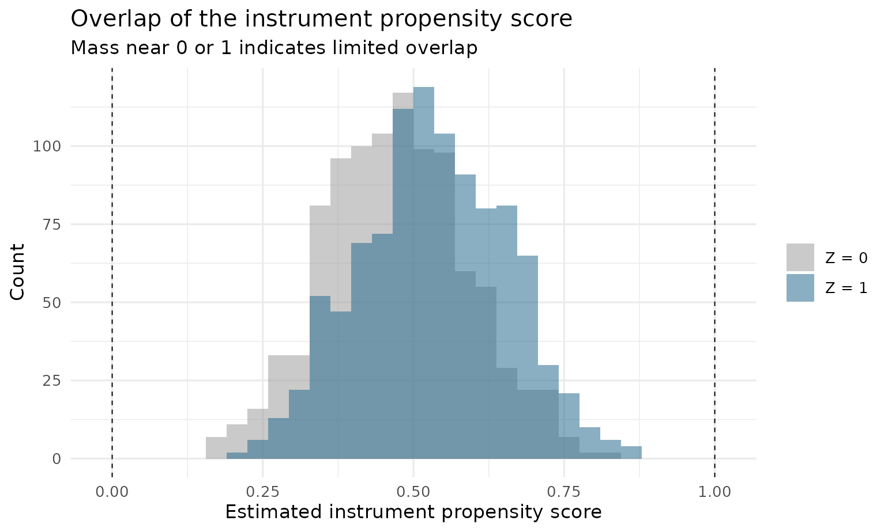
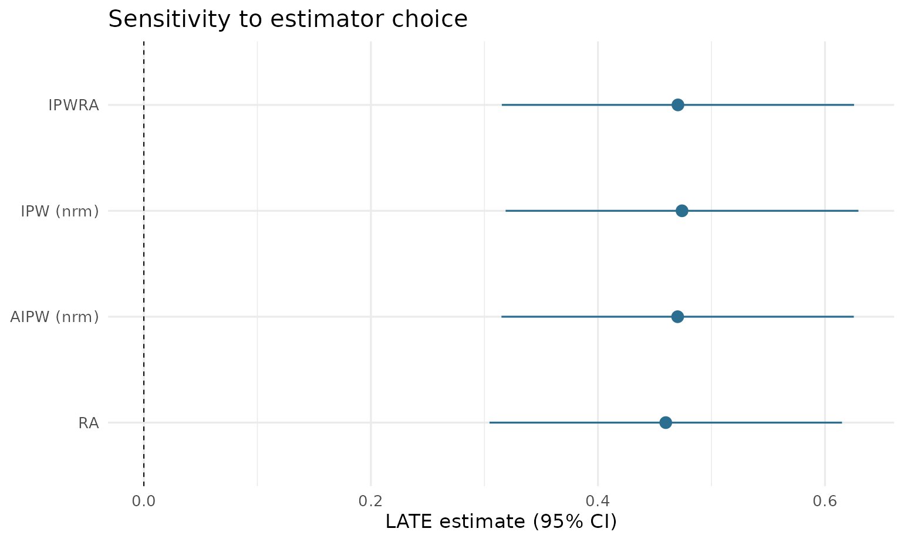

Overview
drlate estimates the local average treatment effect
(LATE) and the local average treatment effect on the treated (LATT) from
observational data with a binary instrument. It implements the complete
estimator suite of Słoczyński, Uysal, and Wooldridge: the doubly robust
estimators of their 2022 paper (the Stata command drlate,
Statistical Software Components S459708) and the Abadie-kappa weighting
estimators of their 2025 JBES paper (the Stata command
kappalate, S459257), unified behind one interface and one
inference architecture.
The estimation core supports:
-
Doubly robust and regression/weighting estimators
(
method): inverse-probability-weighted regression adjustment ("ipwra", the default, doubly robust), inverse probability weighting ("ipw"), augmented inverse probability weighting ("aipw", doubly robust), and regression adjustment ("ra"). -
Abadie-kappa weighting estimators (new in
0.2.0):
"kappa"(kappalate’stau_a),"kappa0"(tau_a,0), and"kappa10"(tau_a,10); together with the two IPW variants (=tau_uandtau_a,1) these complete the five-estimator menu of the 2025 paper. - Outcome and treatment models: linear, logistic, or Poisson, so the outcome and the treatment may each be continuous, binary, or a count.
-
Instrument propensity score models
(
ivmodel): logistic regression by maximum likelihood (default), covariate balancing ("cbps", Imai and Ratkovic 2014), inverse probability tilting ("ipt", Graham, Pinto, and Egel 2012), or probit maximum likelihood ("probit", for the weighting estimators; new in 0.2.0). - Normalized (default) or unnormalized weighting for IPW and AIPW.
- Sampling weights and cluster-robust standard errors.
Beyond the two Stata commands, the package adds a common workflow
layer, and makes it available on the kappa weighting estimators too,
where kappalate itself offers only robust and
cluster-robust standard errors:
-
Diagnostics:
plot()displays of propensity-score overlap, covariate balance, and implied weights;balance()tables; first-stage strength on every printout. -
Weak-instrument-robust inference: Fieller
confidence sets via
confint(method = "fieller")(for the ratio-form estimators, including"kappa"and"kappa0"). -
Bootstrap inference:
vcov = "bootstrap"(cluster-aware, parallelizable). -
The DR Hausman test of unconfoundedness from the
2022 paper’s Section 5 (
dr_hausman()), with an analytic standard error from a jointly stacked moment system. -
Estimator comparison:
drlate_compare()with a dot-whisker plot.
The estimators are validated against the authors’ Stata commands by golden-fixture parity (estimates and standard errors), and the inference extensions by Monte Carlo.
Joint inference
drlate computes point estimates from sequential weighted regressions.
For inference, it stacks the moment conditions of every
estimation stage — the instrument propensity score, the outcome
regressions, the treatment regressions, and the causal aggregates — into
one just-identified M-estimation system; the variance is the sandwich
evaluated at the estimates. This reproduces the Stata package’s
gmm, onestep iterate(0) construction: standard errors
account for the estimation uncertainty of each stage, including the
first-stage propensity score.
Example
The bundled drlate_sim data simulates a binary
instrument rsncode, a binary treatment nvstat
with two-sided noncompliance, and outcomes on three scales. The true
complier effect on lwage is 0.5.
library(drlate)
data(drlate_sim)
fit <- drlate(lwage ~ age + educ, # outcome model
nvstat ~ age + educ, # treatment model
rsncode ~ age + educ, # instrument propensity score model
data = drlate_sim)
summary(fit)
#>
#> Local average treatment effect
#> Number of obs : 2,000
#> Estimator : IPWRA
#> Outcome model : linear
#> Treatment model : logit
#> Instrument model : logit (MLE)
#>
#> Estimate Std. Error z value Pr(>|z|) [95% conf. interval]
#> LATE: D on Y 0.4705 0.07915 5.944 2.786e-09 0.3153 0.6256
#> ATE: Z on Y 0.2845 0.05043 5.642 1.679e-08 0.1857 0.3834
#> ATE: Z on D 0.6048 0.01837 32.929 8.326e-238 0.5688 0.6408
#>
#> First stage (Z on D): z = 32.93 (z^2 ~ first-stage F = 1084)The three reported quantities mirror the Stata package’s output: the causal estimate (LATE), the intent-to-treat effect of the instrument on the outcome (numerator), and the first-stage effect of the instrument on the treatment (denominator), with the LATE formed as their ratio.
coef(fit)
#> LATE: D on Y ATE: Z on Y ATE: Z on D
#> 0.4704664 0.2845452 0.6048151
confint(fit)
#> 2.5 % 97.5 %
#> LATE: D on Y 0.3153295 0.6256033
#> ATE: Z on Y 0.1857013 0.3833891
#> ATE: Z on D 0.5688165 0.6408138Other estimators
# AIPW with unnormalized moments
drlate(lwage ~ age + educ, nvstat ~ age + educ, rsncode ~ age + educ,
data = drlate_sim, method = "aipw", normalized = FALSE)
#>
#> Local average treatment effect
#> Number of obs : 2,000
#> Estimator : AIPW (unnormalized)
#> Outcome model : linear
#> Treatment model : logit
#> Instrument model : logit (MLE)
#>
#> Estimate Std. Error z value Pr(>|z|) [95% conf. interval]
#> LATE: D on Y 0.4702 0.07918 5.938 2.877e-09 0.3150 0.6254
#> ATE: Z on Y 0.2843 0.05044 5.637 1.731e-08 0.1855 0.3832
#> ATE: Z on D 0.6047 0.01838 32.906 1.820e-237 0.5687 0.6407
#>
#> First stage (Z on D): z = 32.91 (z^2 ~ first-stage F = 1083)
# IPW: no covariates in the outcome/treatment equations
drlate(lwage ~ 1, nvstat ~ 1, rsncode ~ age + educ,
data = drlate_sim, method = "ipw")
#>
#> Local average treatment effect
#> Number of obs : 2,000
#> Estimator : IPW (normalized; kappalate tau_u)
#> Outcome model : weighted mean
#> Treatment model : weighted mean
#> Instrument model : logit (MLE)
#>
#> Estimate Std. Error z value Pr(>|z|) [95% conf. interval]
#> LATE: D on Y 0.4741 0.07929 5.979 2.247e-09 0.3187 0.6295
#> ATE: Z on Y 0.2867 0.05047 5.681 1.343e-08 0.1878 0.3856
#> ATE: Z on D 0.6047 0.01836 32.944 5.111e-238 0.5688 0.6407
#>
#> First stage (Z on D): z = 32.94 (z^2 ~ first-stage F = 1085)
# Regression adjustment: no instrument covariates
drlate(lwage ~ age + educ, nvstat ~ age + educ, rsncode ~ 1,
data = drlate_sim, method = "ra")
#>
#> Local average treatment effect
#> Number of obs : 2,000
#> Estimator : RA
#> Outcome model : linear
#> Treatment model : logit
#> Instrument model : logit (MLE)
#>
#> Estimate Std. Error z value Pr(>|z|) [95% conf. interval]
#> LATE: D on Y 0.4597 0.07921 5.804 6.477e-09 0.3045 0.6150
#> ATE: Z on Y 0.2782 0.05041 5.520 3.391e-08 0.1795 0.3770
#> ATE: Z on D 0.6053 0.01833 33.011 5.685e-239 0.5693 0.6412
#>
#> First stage (Z on D): z = 33.01 (z^2 ~ first-stage F = 1090)Abadie-kappa weighting estimators (new in 0.2.0)
The kappa methods are pure weighting estimators — covariates enter
only through the instrument propensity score, so the outcome and
treatment formulas are intercept-only. The printed output shows each
estimator’s kappalate name:
# Normalized Abadie kappa (kappalate tau_a,10); reports the LATE only,
# since the estimator is a difference of two ratios
drlate(lwage ~ 1, nvstat ~ 1, rsncode ~ age + educ,
data = drlate_sim, method = "kappa10")
#>
#> Local average treatment effect
#> Number of obs : 2,000
#> Estimator : KAPPA10 (tau_a,10; normalized Abadie kappa weighting)
#> Outcome model : none (kappa weighting)
#> Treatment model : none (kappa weighting)
#> Instrument model : logit (MLE)
#>
#> Estimate Std. Error z value Pr(>|z|) [95% conf. interval]
#> LATE: D on Y 0.474 0.07929 5.979 2.249e-09 0.3186 0.6294
#>
#> First stage (Z on D): z = 32.75 (z^2 ~ first-stage F = 1072)
# Unnormalized Abadie kappa (tau_a); Fieller sets available
fit_k <- drlate(lwage ~ 1, nvstat ~ 1, rsncode ~ age + educ,
data = drlate_sim, method = "kappa")
confint(fit_k, method = "fieller")
#> Fieller 95% confidence set for LATE: D on Y:
#> [0.3142, 0.6282]LATT, other model families, and IPT
# LATT with an inverse-probability-tilted instrument propensity score
drlate(lwage ~ age + educ, nvstat ~ age + educ, rsncode ~ age + educ,
data = drlate_sim, estimand = "latt", ivmodel = "ipt")
#>
#> Local average treatment effect on the treated
#> Number of obs : 2,000
#> Estimator : IPWRA
#> Outcome model : linear
#> Treatment model : logit
#> Instrument model : logit (IPT)
#>
#> Estimate Std. Error z value Pr(>|z|) [95% conf. interval]
#> LATT: D on Y 0.4725 0.08088 5.842 5.156e-09 0.3140 0.6310
#> ATT: Z on Y 0.2845 0.05144 5.530 3.209e-08 0.1836 0.3853
#> ATT: Z on D 0.6020 0.01887 31.903 2.425e-223 0.5650 0.6390
#>
#> First stage (Z on D): z = 31.9 (z^2 ~ first-stage F = 1018)
# Poisson outcome model for the positive wage level
drlate(kwage ~ age + educ, nvstat ~ age + educ, rsncode ~ 1,
data = drlate_sim, method = "ra", omodel = "poisson")
#>
#> Local average treatment effect
#> Number of obs : 2,000
#> Estimator : RA
#> Outcome model : poisson
#> Treatment model : logit
#> Instrument model : logit (MLE)
#>
#> Estimate Std. Error z value Pr(>|z|) [95% conf. interval]
#> LATE: D on Y 0.5931 0.10730 5.527 3.253e-08 0.3828 0.8034
#> ATE: Z on Y 0.3589 0.06796 5.282 1.278e-07 0.2258 0.4921
#> ATE: Z on D 0.6053 0.01833 33.011 5.685e-239 0.5693 0.6412
#>
#> First stage (Z on D): z = 33.01 (z^2 ~ first-stage F = 1090)Clustered standard errors and weights
drlate(lwage ~ age, nvstat ~ age, rsncode ~ age, data = drlate_sim,
cluster = drlate_sim$educ)
#>
#> Local average treatment effect
#> Number of obs : 2,000
#> Number of clusters: 3
#> Estimator : IPWRA
#> Outcome model : linear
#> Treatment model : logit
#> Instrument model : logit (MLE)
#>
#> Estimate Std. Error z value Pr(>|z|) [95% conf. interval]
#> LATE: D on Y 0.5254 0.083820 6.268 3.65e-10 0.3611 0.6897
#> ATE: Z on Y 0.3171 0.051494 6.159 7.34e-10 0.2162 0.4181
#> ATE: Z on D 0.6036 0.001815 332.624 0.00e+00 0.6000 0.6071
#>
#> First stage (Z on D): z = 332.6 (z^2 ~ first-stage F = 110638)Diagnostics
plot() provides the standard design checks —
propensity-score overlap, covariate balance before/after weighting (the
love plot), and the implied weight distributions; balance()
returns the standardized mean differences as a data frame:
fit <- drlate(lwage ~ age + educ, nvstat ~ age + educ,
rsncode ~ age + educ, data = drlate_sim)
plot(fit, type = "balance")
balance(fit)
#> variable smd_unweighted smd_weighted
#> 1 age 0.44613912 0.002276611
#> 2 educcollege 0.07633523 -0.003643849
#> 3 educgraduate 0.18356486 0.008657272
plot(fit, type = "overlap")
Inference beyond the default sandwich
Every printout reports the first-stage z (with z² ≈ F for a single binary instrument) and flags weakness below F = 10. The package adds two inference tools:
# Weak-instrument-robust Fieller confidence set (may be unbounded when
# the first stage is weak -- that is the honest answer)
confint(fit, method = "fieller")
#> Fieller 95% confidence set for LATE: D on Y:
#> [0.3131, 0.6239]
# Nonparametric bootstrap (percentile CIs; clusters resampled whole
# when `cluster` is supplied)
fit_b <- drlate(lwage ~ age + educ, nvstat ~ age + educ,
rsncode ~ age + educ, data = drlate_sim,
vcov = "bootstrap", boot_reps = 199, boot_seed = 1)
confint(fit_b)
#> 2.5 % 97.5 %
#> LATE: D on Y 0.3178074 0.6159603
#> ATE: Z on Y 0.1965297 0.3794341
#> ATE: Z on D 0.5774018 0.6401410The DR Hausman test of unconfoundedness
Under one-sided noncompliance (nobody takes the treatment without the instrument), the instrument-based LATT equals the unconfoundedness-based ATT if treatment assignment is unconfounded given the covariates. Section 5 of the 2022 paper turns this equality into a heterogeneity-robust Hausman test, implemented here; the Stata package does not provide it:
d_os <- drlate_sim
d_os$nvstat[d_os$rsncode == 0] <- 0L
dr_hausman(lwage ~ age + educ, nvstat ~ age + educ, rsncode ~ age + educ,
data = d_os)
#>
#> Doubly robust Hausman test of unconfoundedness
#> (Sloczynski-Uysal-Wooldridge 2022, one-sided noncompliance)
#>
#> data: d_os
#> z = -5.7425, p-value = 9.331e-09
#> alternative hypothesis: two.sided
#> sample estimates:
#> DR LATT DR ATT difference
#> 0.3760331 0.6323210 -0.2562878The simulated treatment is confounded by construction, and the test rejects.
Comparing estimators
cmp <- drlate_compare(lwage ~ age + educ, nvstat ~ age + educ,
rsncode ~ age + educ, data = drlate_sim)
#> method = "ipw": dropping outcome/treatment covariates (weighted means only).
#> method = "ra": dropping instrument covariates (no propensity score).
cmp
#> Estimator comparison (LATE)
#>
#> estimator estimate se 95% CI
#> ipwra 0.4705 0.0792 [0.3153, 0.6256]
#> ipw (nrm) 0.4741 0.0793 [0.3187, 0.6295]
#> aipw (nrm) 0.4702 0.0792 [0.3150, 0.6254]
#> ra 0.4597 0.0792 [0.3045, 0.6150]
plot(cmp)
Replicating the Stata examples
The Stata help file’s examples use a public extract from the Survey of Income and Program Participation (SIPP). The equivalent R calls are:
sipp <- haven::read_dta("https://people.brandeis.edu/~tslocz/sipp.dta")
sipp <- subset(as.data.frame(sipp),
!is.na(kwage) & !is.na(educ) & rsncode != 999)
sipp$lwage <- log(sipp$kwage)
# Stata: drlate (lwage age_5) (nvstat age_5) (rsncode age_5)
drlate(lwage ~ age_5, nvstat ~ age_5, rsncode ~ age_5, data = sipp)
# Stata: drlate (lwage age_5) (nvstat age_5) (rsncode age_5, ipt), latt
drlate(lwage ~ age_5, nvstat ~ age_5, rsncode ~ age_5, data = sipp,
ivmodel = "ipt", estimand = "latt")
# Stata: kappalate lwage (nvstat = rsncode) age_5, zmodel(logit) which(all)
drlate(lwage ~ 1, nvstat ~ 1, rsncode ~ age_5, data = sipp,
method = "kappa") # tau_a; likewise "kappa0", "kappa10",
# and method = "ipw" for tau_u / tau_a,1
# Stata: kappalate lwage (nvstat = rsncode) age_5, zmodel(probit)
drlate(lwage ~ 1, nvstat ~ 1, rsncode ~ age_5, data = sipp,
method = "kappa", ivmodel = "probit")The package’s test suite verifies numerical equivalence of estimates
and standard errors against fixtures generated by both Stata commands on
this dataset (see inst/stata/make-fixtures.do and
inst/stata/make-kappalate-fixtures.do).
Citation
If you use drlate in your research, please cite the R package, the
methodological paper for the estimators you use, and the original Stata
module (see citation("drlate") for BibTeX entries):
Venkitasubramanian, K. (2026). drlate: Doubly Robust Estimation of the Local Average Treatment Effect in R. R package version 0.2.0. https://github.com/kvenkita/drlate
Słoczyński, T., Uysal, S. D., & Wooldridge, J. M. (2025). Abadie’s Kappa and Weighting Estimators of the Local Average Treatment Effect. Journal of Business & Economic Statistics 43(1), 164–177.
Uysal, D., Słoczyński, T., & Wooldridge, J. M. (2026). DRLATE: Stata module to perform doubly robust estimation of the local average treatment effect (LATE) and the local average treatment effect on the treated (LATT). Statistical Software Components S459708, Boston College Department of Economics.
References
- Słoczyński, T., S. D. Uysal, and J. M. Wooldridge (2022). “Doubly Robust Estimation of Local Average Treatment Effects Using Inverse Probability Weighted Regression Adjustment.” arXiv:2208.01300.
- Słoczyński, T., S. D. Uysal, and J. M. Wooldridge (2025). “Abadie’s Kappa and Weighting Estimators of the Local Average Treatment Effect.” Journal of Business & Economic Statistics 43(1), 164–177.
- Abadie, A. (2003). “Semiparametric Instrumental Variable Estimation of Treatment Response Models.” Journal of Econometrics 113(2), 231–263.
- Donald, S. G., Y.-C. Hsu, and R. P. Lieli (2014). “Testing the Unconfoundedness Assumption via Inverse Probability Weighted Estimators of (L)ATT.” Journal of Business & Economic Statistics 32(3), 395–415.
- Fieller, E. C. (1954). “Some Problems in Interval Estimation.” JRSS-B 16(2), 175–185.
- Graham, B. S., C. C. de Xavier Pinto, and D. Egel (2012). “Inverse Probability Tilting for Moment Condition Models with Missing Data.” Review of Economic Studies 79(3), 1053–1079.
- Imai, K., and M. Ratkovic (2014). “Covariate Balancing Propensity Score.” JRSS-B 76(1), 243–263.